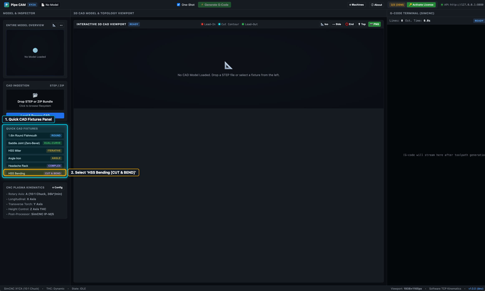

Step 01
Select
Select HSS Bending [CUT & BEND] from Quick CAD Fixtures
Start from the main RotaryCAM workspace and locate the Quick CAD Fixtures panel on the left sidebar (or drop your own bent-tube .step file into the CAD Ingestion zone).
- Click HSS Bending [CUT & BEND] at the bottom of the Quick CAD Fixtures list.
- RotaryCAM loads the 3D bent tube CAD solid, detects all 3 bends along its centerline, and calculates the unfolded straight-stock length (
2030.2 mm).
